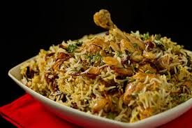
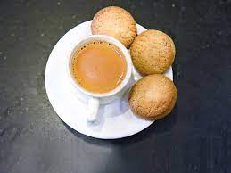
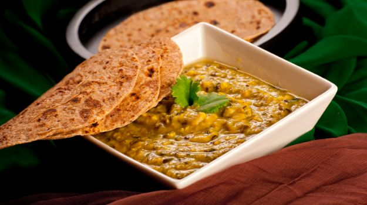
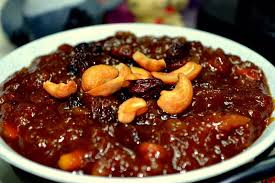

Hyderabadi Biryani is one of the most popular dishes of the city. It is distinctly different from other variations of the Biryani, originating from the kitchens of the Nizams of Hyderabad. It is a celebration dish of basmati rice and mutton, along with yoghurt, onions and various spices.
| photo | about food | address |
|---|---|---|
| click | Hyderabadi biryani is usually meaty and spicy and has a good color of zaffran. Lucknowi biryani, on the other hand, is smooth and its meat is marinated in yoghurt and herbs. While they both stake their claims on which is better and authentic, the debate rages on. | rtc cross roads BAWARCHI |
|  | The Irani chai was popularised in Hyderabad by Irani businessmen who settled in the city, and had close connections with the nizam. Chai was already a favourite beverage of Hyderabadis, but none caught the taste-buds of the city's population like the Irani chai did. | Gowlidoddi, Main Rd, _opp—vanHeusen, Hyderabad, Telangana 500032 |
|  | How popular haleem is can be known by seeing the crowd eating haleem in Hyderabad after their roza. It is originally an Arabic dish. Hyderabad haleem is exported to more than 50 countries, during Ramadan about 7,000 eateries throughout the city sell haleem but these places makes you go crazy about haleem. | kondapur Telangana |
|  | Double ka meetha also known as Shahi Tukra, is an Indian bread pudding sweet made of fried bread slices soaked in hot milk with spices, including saffron and cardamom. Double ka meetha is a dessert of Hyderabad State. It is popular in Hyderabadi cuisine, served at weddings and parties.zation | · Grand Hotel · Santosh Dhaba · Pizza Hut · Pista House Bakery · Shah Ghouse Hotel & Restaurant · Mehfil · |